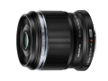

这支微距镜头拥有2.5倍图像放大倍率（等效35mm）及95mm的最近对焦距离（工作距离14mm），微距拍摄效果惊人。与具备五轴防抖的机身配合使用时，可以更好地解决微距摄影中因微小的移动造成的图像模糊现象。
轻便小巧，大放大比小微距镜头， 对焦安静顺滑，画质锐利， 是拍摄静物，人文挂机镜头。
锐不可挡：中央画质极好，边缘画质良好！ 背景：较好
有中等程度色差 最近合焦距离过短，超级放大比微距摄影布光困难，